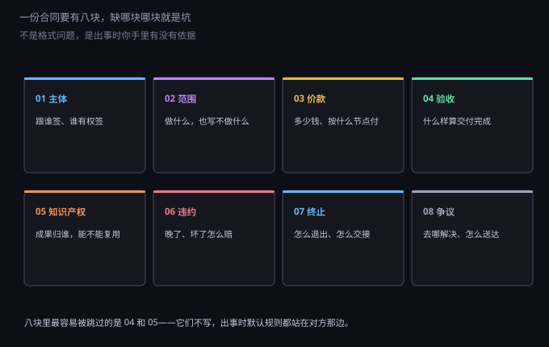
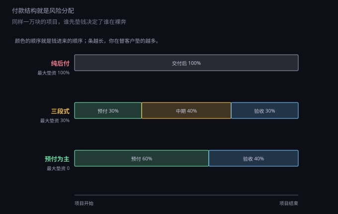
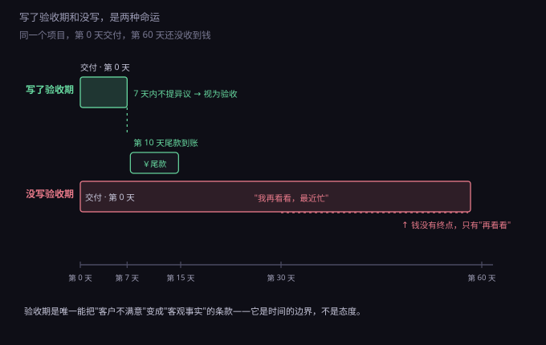

约 0.35 万字 · 3 张图 · 八块骨架、两条时间线、三种付款结构
先破一个常见的想法：合同是给"信不过的人"准备的。
不是。合同是给"将来可能变化的人"准备的。 今天合作愉快的客户，明天可能换了负责人、可能自己资金链断了、 可能老板觉得"这东西不值这个钱"。这些都不是坏人，是常态。
合同的作用，是把这些常态提前写成规则，让双方在情绪上来之前就知道怎么办。 它真正的读者不是法官，是将来那个正在吵架的你和对方。
所以一份合同该写多细？标准很朴素：写到"不用打电话问，看合同就知道"为止。 凡是需要口头解释才能成立的条款，等于没写。
技术类服务合同、外包合同、SaaS 采购合同，条款名字五花八门， 但骨架上都是八块。

这八块里，被跳过最多的是第 04 块验收和第 05 块知识产权。 原因很现实：谈钱的时候双方都清醒，谈"什么算做完"和"成果归谁"的时候， 都觉得"我们关系这么好，不用计较"。
而法律的处理方式恰好相反：没约定的地方，一律按默认规则办。 默认规则不一定公平，它只是"法律替你选了一个"。 比如委托开发的作品，没约定著作权归属，法律直接判给写代码的那一方—— 也就是说，你花钱请人做的系统，著作权可能是对方的。
后面几节按这八块，挑最容易吃亏的地方讲。
第一块是主体，也就是"这份合同的对家到底是谁"。 这一块出错，后面全废。
常见三种坑。
第一种，对方用个人名义签，实际是公司在做事。 合同抬头写的是"张某"，付款却从公司账户来。 出了纠纷，你告张某，他没钱；你想告公司，合同上没它。 正确做法：抬头写公司全称，附统一社会信用代码，签字人写职务并加盖公章。
第二种，签字的人没有授权。 对接你的可能是项目经理、行政、甚至老板的助理。 他签了字，公司事后说"他没这个权限"，合同就可能不成立。 防法是看两样：公章（或合同专用章），以及授权委托书。 只签字不盖章的合同，风险高了不止一档。
第三种，分公司、子公司分不清。 分公司没有独立法人资格，责任由总公司承担，起诉时可以一起告； 子公司是独立法人，母公司不为它兜底。 跟分公司签，最好加一句"由总公司承担连带责任"。
还有一件小事别忽略：合同上的联系地址、邮箱、电话要写真实有效的。 后面讲"送达"的时候你会知道，这一栏能决定你输赢。
第二块是范围。这一块决定了项目会不会变成无底洞。
新手最常见的写法是："乙方负责开发一个电商网站。" 这一句话能引出三百个争议：要不要小程序？要不要对接支付？后台要不要权限管理？ 要不要导出报表？改几次算改完？
正确的写法是三层。
第一层，功能清单。 把要做的模块列成表，每项写清输入输出和边界。 不用写到技术方案那么细，但要写到"验收时能逐条打勾"。
第二层，明确排除项。 这一层最值钱，也最少人写。 加一句"本合同不包含：iOS 与安卓客户端、多语言、第三方物流对接、历史数据迁移"， 能省掉后面无数扯皮。
第三层，变更机制。 需求一定会变，所以要写"怎么变"： 变更需双方书面确认，影响工期或工作量的，按人天单价另计，单价写进合同。 没有这一句，所有新增需求都会变成"这不就是顺手的事吗"。
顺手的定义权，才是这块条款真正在争的东西。
第三块是价款。多数人只谈"总价多少"，其实结构比数字重要。

纯后付是"做完再给"，客户最喜欢，你最危险。 一个三个月的项目，你要垫三个月的人力和服务器，还要承担"做完他说不要了"的风险。 最大垫资 100%。
三段式是常见折中：预付 30%，中期交付 40%，验收后 30%。 最大垫资降到 30%——差不多是一个月的成本，撑得住。 这一档最容易谈成，也最该谈成。
预付为主是 60/40 甚至 80/20，适合金额小、周期短、 或者你明显强势的场合。客户一般不同意，但小项目里很常见。
结构之外还有三句话必须写。
一是付款时限："验收后 7 个工作日内支付"，不要写"尽快"。 二是逾期违约："逾期每日按未付金额的万分之五计违约金"。 三是发票与付款的顺序：写"收到发票后付款"对你不利—— 你开了票、交了税，钱还没到。能争就写成"付款后 5 个工作日内开票"。
顺便说一句定金。定金有惩罚性：付定金的一方违约，定金不退； 收定金的一方违约，双倍返还。但定金额不得超过合同总价的 20%，超了的部分不算定金。
第四块是验收，也是整份合同里最容易被忽视、后果最直接的一块。

"客户不满意"是一件主观的事，主观的事没法举证。 验收条款的作用，就是把它变成一个客观的、有截止时间的事实。
所以要写三样。
验收标准。 对应功能清单逐条验收，或者写"达到附件《验收清单》所列全部条目即视为合格"。 别写"满足甲方需求"——甲方的需求是可以每天更新的。
验收期限。 "交付后 7 个工作日内提出书面异议，逾期未提出的，视为验收通过。" 这一句是整段的核心。没有它，验收期就是无限长。
异议的处理方式。 提出异议后，多少天内修复、修复后重新计算几天验收期、几次修复不通过可以终止。 把这几步写完，验收就不再是拉锯，而是流程。
还有一个小技巧：先部分验收。 大项目拆成几期，每期单独验收、单独付款。 这样即使最后一期扯皮，前面的钱已经落袋了。
第五块是知识产权。这一块的法律默认规则，几乎所有人都猜错。
《著作权法》第十九条：受委托创作的作品，著作权的归属由委托人和受托人通过合同约定； 合同未作明确约定或者没有订立合同的，著作权属于受托人。
换成大白话：你花钱请人写代码，如果合同里没写"著作权归甲方"， 那这套代码的著作权是写代码那个人的。 他可以拿去卖给别的客户，你拦不住。
所以委托开发的合同里，知识产权条款必须写清四件事。
一，成果归属："本项目全部交付物（含源代码、文档、设计稿）的著作权归甲方所有。"
二，人身权之外的权利：署名权一般归作者，改不了； 但发表权、修改权、复制权、信息网络传播权这些财产性权利可以约定归你。
三，第三方素材的授权：用了开源库、字体、图标、配图， 要让对方保证有权使用，并列出清单。 字体是最常见的坑——商用字体没授权，一封律师函几千到几万。
四，背景知识产权：对方在项目之前就有的通用框架、组件， 著作权还是他的，但你要拿到"永久、免费、可转让的使用许可"。 不写这一条，系统上线半年后他说"框架授权到期了"，你就被卡住了。
如果你是写代码的一方，这几条反过来看你也能用： 通用组件保留所有权、只给使用许可，是合理的商业做法，前提是写在合同里。
第六块是违约。很多人写"违约方承担一切损失"，写完就放心了。
这句话在法庭上几乎没用。什么叫"一切损失"？怎么证明？ 法官需要一个能算的数。
所以违约金要写成算式： 逾期交付的，每逾期一日按合同总价的万分之五支付违约金，累计不超过合同总价的 20%。 万分之五折成年化是 18.25%，比一般贷款利率高，有威慑力又不至于被认定过高。
关于"过高"：法律允许法院调整过分高于实际损失的违约金， 实践中常以超过实际损失 30% 作为参考线。 所以违约金不是越高越好，写一个"能执行"的数比写一个"吓人"的数有用。
还要写两件事。
赔偿范围：明确"赔偿限于直接损失，不包括间接损失、可得利益损失、商誉损失"。 这一条对大项目尤其重要——客户系统停一天说损失两百万，你得有个上限挡着。 常见写法是"累计赔偿总额不超过合同总价"。
责任的分界：因对方提供的资料错误、第三方服务故障、 不可抗力造成的延误，不算你违约。这三条免责要提前写，事后补是补不上的。
第七块是终止。合同签的时候都想着长久，但退出机制必须写。
要写清：什么情况下可以单方终止（连续两个月不付款、需求重大变更谈不拢、 一方破产）；终止后已完成的工程量怎么结算； 资料和数据怎么交接（多少天内、什么格式、交接完成的标准）； 保密义务在终止后继续有效几年。
最后一句特别重要：数据交接。 客户的数据在你服务器上，终止后你不给，可能构成侵占； 你给了却没留副本，将来举证又没材料。写清"交付后保留 30 天，之后删除"最稳。
第八块是争议解决，两件事。
去哪解决。 诉讼或仲裁二选一。诉讼可以约定与争议有实际联系地点的法院， 通常写"由甲方所在地人民法院管辖"或"由合同签订地法院管辖"。 仲裁一裁终局、速度快，但费用高，而且约定必须明确到具体的仲裁委员会， 写"提交仲裁"等于没写。
怎么送达。 加一句"本合同所列地址、电子邮箱为有效送达地址， 一方变更应书面通知，未通知的，按原地址寄出即视为送达"。 这一句能解决"对方躲着不收传票"的问题，实务里价值极高。
最后把最值钱的六句集中列出来，写合同时照着加。
一，"交付后 7 个工作日内未提出书面异议的，视为验收通过。"
二，"本项目全部交付物的著作权归甲方所有，乙方保留其背景组件的所有权并授予甲方永久免费使用许可。"
三，"需求变更须双方书面确认，超出原范围的按人天单价 800 元另计。"
四，"逾期付款每日按未付金额万分之五计违约金；逾期超过 30 日，乙方有权暂停服务并终止合同。"
五，"乙方累计赔偿责任不超过本合同总价，且不包括间接损失与可得利益损失。"
六，"双方确认本合同所列地址与邮箱为有效送达地址。"
这六句加起来不到两百字，能挡掉小公司八成合同纠纷。 它们不聪明，只是把"到时候再说"变成了"现在就定"。